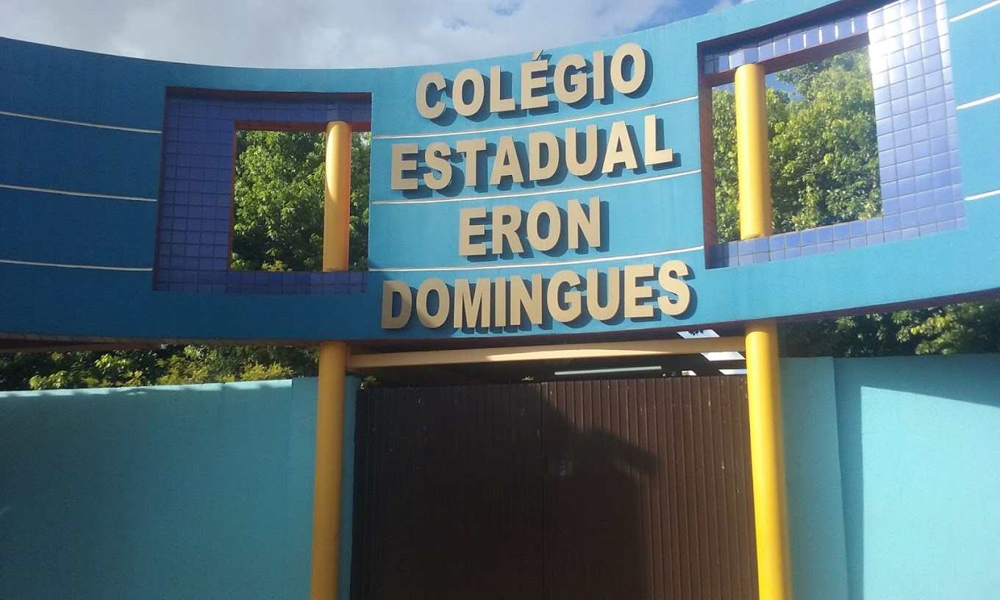

O Colégio Eron Domingues, o maior e mais antigo da NRE de Toledo,
destaca-se pela excelência educacional. Suas modernas instalações e
corpo docente experiente proporcionam um ambiente ideal para um ensino
de qualidade. Os alunos desfrutam de amplo suporte social, laboratórios
bem equipados e participam de estágios e programas educacionais
renomados. Priorizando o conforto dos alunos, a escola oferece espaços
amplos e diversos recursos, incluindo biblioteca, reprografia, cantina e
cozinha. Adaptada para atender às necessidades dos alunos com
deficiência, o Colégio Eron Domingues participa ativamente de projetos
estaduais e nacionais para aprimorar sua oferta educacional. Em suma,
compromete-se a agregar o nome de cada aluno ao seu legado, cumprindo
sua missão de proporcionar uma educação de excelência.

Curso Zero ao APP para Alunos do Eron Domingues
O curso "Do Zero ao APP" para alunos de Desenvolvimento de Sistemas
foi concluído
em 07 de dezembro de 2023, resultado de uma colaboração entre o Rotary
Club
de Marechal Cândido Rondon 25 de julho, a Faculdade Isepe Marechal
Cândido Rondon
e o Colégio Estadual Eron Domingues. Organizado por Carlos Erig, com o
apoio de Carlos Becker,
Gustavo Giopato Manfredi e Deividy Alisom Johann da Silva, o curso foi
elogiado por seu impacto
educacional positivo.

O Painel de Profissões
evento para os alunos do novo Ensino Médio, proporcionando a
oportunidade
de explorar diferentes carreiras em alta no mercado de trabalho. Com o
objetivo
de auxiliar na escolha profissional, o evento permitiu aos estudantes
interagir com
profissionais, conhecer suas experiências e receber orientações sobre
caminhos
acadêmicos. Além disso, o Painel também contribuiu para aumentar a
visibilidade
do colégio, destacando seu compromisso com uma educação preparatória
para
o futuro dos alunos.
Opiniões de alunos
"O Eron é um colégio da hora! Tem muita resenha,
mas também oferece um bom ensino, tanto no ensino médio e
profissionalizante
quanto no fundamental."
"O Eron é top demais, mano! Tô ligado que tem uns
rolês irados
por lá, mas o ensino é show de bola, sério!"
"Sério, o Eron é daqueles lugares que dá gosto de ir
todo dia. A vibe é maneira e os professores tão sempre na ativa
pra ajudar."
"Cara, o Eron é tipo o lugar onde o aprendizado se
mistura com a diversão, saca? Tipo, você aprende pra caramba, mas
sem aquela vibe de escola chata, é sensacional!"
"Não tem nem o que falar, o Eron é um rolezão da educação!
Tá ligado que é um lugar onde você vai querer tá, porque
tem ensino de qualidade e ainda rola umas atividades massa demais."
O que é Área do aluno?
A área do aluno do Colégio Eron Domingues é uma página dedicada a
fornecer informações importantes, como regras e regulamentos escolares,
além de oferecer dicas valiosas para que os alunos alcancem sucesso
tanto em seus estudos quanto em suas relações com amigos e professores.
Projetos no colegio
Projetos e Jogos Interclasses durante a Semana de Conselho de Classe
Durante a Semana de Conselho de Classe, o Colégio Eron Domingues promove
uma série de projetos e jogos esportivos entre as séries. Os alunos
participam de competições de vôlei, caçador, futsal, e outros,
promovendo integração, trabalho em equipe e diversão.
Projeto de Futsal Noturno no Colégio Eron Domingues
À noite, o colégio oferece o projeto de futsal, proporcionando aos
alunos uma atividade esportiva após as aulas.
Além de ser uma opção de
lazer, o futsal noturno promove disciplina, comprometimento e bem-estar
físico e mental.
O CELEM (Certificado de Proficiência em Língua Estrangeira Moderna)
É um exame que avalia a proficiência dos candidatos em línguas
estrangeiras, como Libras e Espanhol. No caso de Libras (Língua
Brasileira de Sinais), o exame avalia a capacidade do candidato de
compreender e se comunicar na língua de sinais utilizada pela comunidade
surda. Já o exame de Espanhol avalia a habilidade dos candidatos em
compreender, falar, ler e escrever em espanhol, uma língua cada vez mais
importante devido à sua relevância global.

Edutec
É um programa educacional que visa promover o uso de tecnologia na
educação. Através do Edutec, os alunos têm acesso a recursos
tecnológicos avançados, como aplicativos educacionais, plataformas
online e ferramentas de ensino digital. Isso permite uma aprendizagem
mais interativa, dinâmica e personalizada, que se adapta às necessidades
individuais de cada aluno. O Edutec também capacita os professores para
integrar a tecnologia em suas práticas pedagógicas, melhorando assim a
qualidade do ensino e preparando os alunos para os desafios do século
XXI.
Creditos finais
Desenvolvedor e apoiadores
O aluno Bruno Carletto Adamczyk, do curso TDS (Técnico em
Desenvolvimento de Sistemas), foi responsável pela produção do site
atualmente utilizado pelos clientes, com o auxílio da professora Erika.
 : ce_eron_domingues.
: ce_eron_domingues.